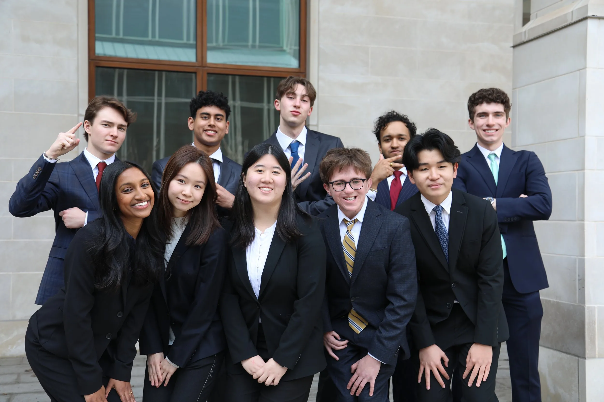

Fall 2026 Recruitment
Applications are due by 9/8 @ 11:59 PM! To be eligible to apply, you must attend one out of two info sessions. Please fill out to Interest Form to get more information about Info Session locations and dates! Optional coffee chats with exec and project leads is highly encouraged!
Applications will be open from January 21 to January 27, with interview decisions being released shortly after. We will conduct interviews from January 29 to February 1, with decisions released on February 3 at 5:00 pm.
Accepted members will be incorporated into 180 DC WashU shortly after final decisions are released.
New members should expect a commitment of approximately 10 hours per week. This will include training, onboarding, meeting existing members, and initial project work. After onboarding has concluded, the expected time commitment is 6-8 hours per week, with exact workloads varying by role and project.
GBMS will be held 1-2 times per week for group training, updates, speaker sessions, and networking events.
Members will work in project groups, each with a project manager and 4-5 consultants. Clients for Spring 2026 are TBD, but members will have the option to rank their project preferences. Tasks will be client-specific, but have often involved meetings, data analysis, market research, advisory, and client-facing presentations.
FAQs
General
Applications & Interviews
No. Our team is made of members from every WashU school, and we seek this diversity of experience to add an extra level of depth to our work. We encourage any interested WashU student to apply!
No. We understand that many applicants may have little or no experience, and account for this in our decision-making. If you don’t have much experience, we recommend that you convey how you plan to make a social impact as a member of 180 DC WashU.
If you are selected to move on to the interview round and are unable to attend any available interview time, please contact us immediately so we can accommodate your situation.
Our interview process consists of a behavioral and case interview. Both sections will be conducted together at an in-person location (Bauer Hall). Our info sessions are designed to help candidates prepare for both phases of the interview. Interviews should last approximately 30 minutes.
Recruitment Specifics
Coffee chats are a great opportunity to connect with existing members and learn more about their experience at 180 DC WashU, and can help applicants stand out. We encourage reaching out if you’re interested!
Yes. We are looking for candidates with demonstrated interest, and attending a recruitment event is great preparation for membership and interviews. If you are unable to attend any of the recruitment events, please contact us quickly so we can accommodate you in the application process.
As we announce upcoming recruitment events, we encourage those interested in joining to follow our Instagram and LinkedIn pages to stay updated with all events. Most info sessions will be held in Bauer Hall, with the specific room, date, and time TBD.